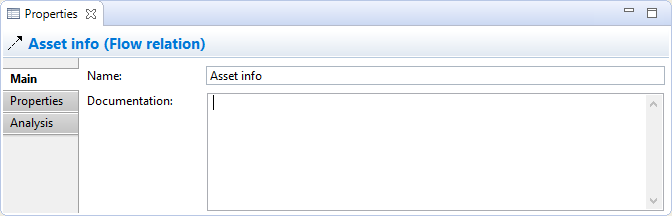
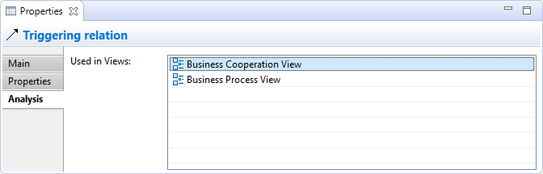

Propriétés des relations
Sélectionner une relation de modèle dans l'arborescence des modèles signifie que vous pouvez modifier ou consulter les propriétés suivantes dans la fenêtre des propriétés.
L'onglet principal

Modification des propriétés "principales" d'une relation ArchiMate
| Nom: |
Le nom de la relation. S'il est fourni, il sera affiché à proximité de la connexion dans une vue. |
| Documentation: |
Un endroit pour saisir de la documentation utilisateur concernant la relation. |
 Dans le champ texte "Documentation", les URLs qui commencent par "http://" "https://" ou "ftp://" seront affichées en tant qu'hyperliens. Si vous appuyez sur la touche Ctrl / Commande, le curseur prendra la forme d'une main et vous pourrez ouvrir le lien dans un navigateur.
Dans le champ texte "Documentation", les URLs qui commencent par "http://" "https://" ou "ftp://" seront affichées en tant qu'hyperliens. Si vous appuyez sur la touche Ctrl / Commande, le curseur prendra la forme d'une main et vous pourrez ouvrir le lien dans un navigateur.
Le type de relation Accède possède une propriété additionnelle:
| Type d'accès: |
Peut être défini à "Accède", "Lecture", "Écriture" ou "Lecture/Écriture". Définir ceci modifie également les têtes de flèches de la connexion. |
Le type de relation Influence possède une propriété additionnelle:
| Strength: |
Peut être défini avec une valeur appropriée telle que "+", "++", "+++", "-", "--", "---". |
L'onglet Propriétés
Pour plus d'informations concernant la création et la gestion des propriétés utilisateur, voir Propriétés utilisateur.
L'onglet Analyse

Consultation des propriétés d'analyse pour une relation ArchiMate
| Utilisée dans les vues: |
Un tableau affichant les vues (s'il y en a) dans lesquelles la relation choisie est utilisée (affichée dans le diagramme). Double-cliquer sur une entrée du tableau ouvrira la vue et sélectionnera la relation (connexion) dans le diagramme. |